▣ MATERIAL DIGITAL PARA CONSULTA TÉCNICA
FACILITA GELADEIRAS · FROST FREE RESIDENCIAL
VOCÊ NÃO PRECISA PROCURAR COMO FAZER O AUTOTESTE OU O VALOR DA RESISTÊNCIA ÔHMICA DE SENSORES E RESISTÊNCIAS EM MATERIAL SOLTO NA INTERNET.
Encontre a rota certa da família de geladeira antes de sair desmontando.
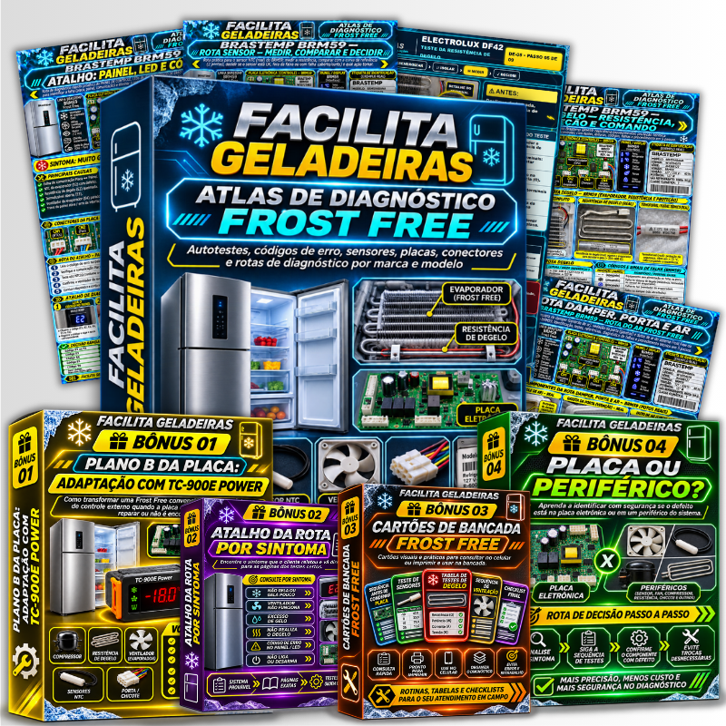
O Facilita Geladeiras reúne rotas de consulta para Frost Free residencial: autotestes, LEDs e códigos, sensores, degelo, ventilação e a sequência de testes que faz sentido para cada família. Você confirma a etiqueta, abre a rota aplicável e segue o próximo teste com mais lógica.
- Autotestes e pré-autotestes organizados por família
- Leitura de LED, painel e código antes de resetar ou desmontar
- Sensores, degelo e ventilação com condição de teste e próxima rota
- Consulta no celular para usar no atendimento ou na bancada
📲 Acesso digital liberado após a confirmação do pagamento
O PROBLEMA NÃO É FALTA DE MULTÍMETRO
CADA FAMÍLIA ESCONDE OS ATALHOS EM UM LUGAR DIFERENTE.
Você já sabe testar geladeira. O atraso acontece quando precisa parar o atendimento para procurar o autoteste, interpretar um painel, lembrar a curva do sensor ou descobrir por onde aquela família deve começar.
ETIQUETA→PAINEL / SINTOMA→TESTE CORRETO→PRÓXIMA ROTA
CONSULTA DE CAMPO
VEJA UMA PARTE DO QUE ESTÁ DENTRO DO ATLAS
Páginas visuais feitas para localizar, medir, interpretar e seguir. A primeira imagem mostra a entrada por autoteste; as demais mostram como a rota conduz o diagnóstico.
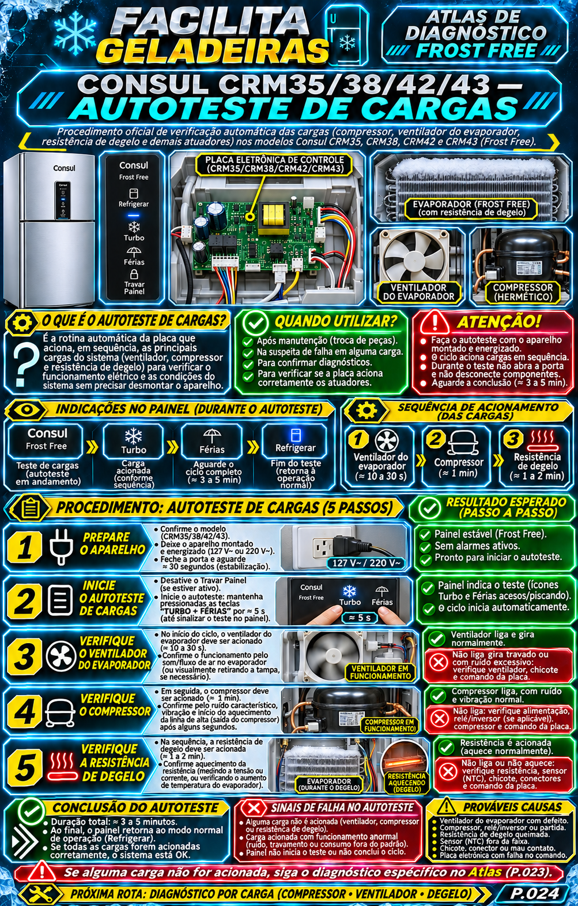
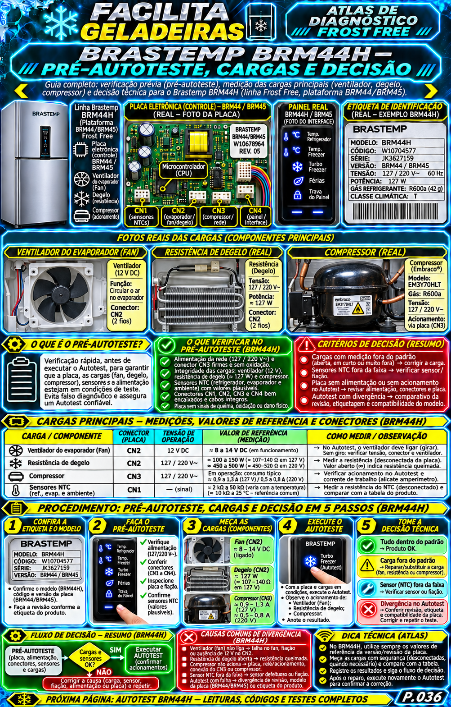
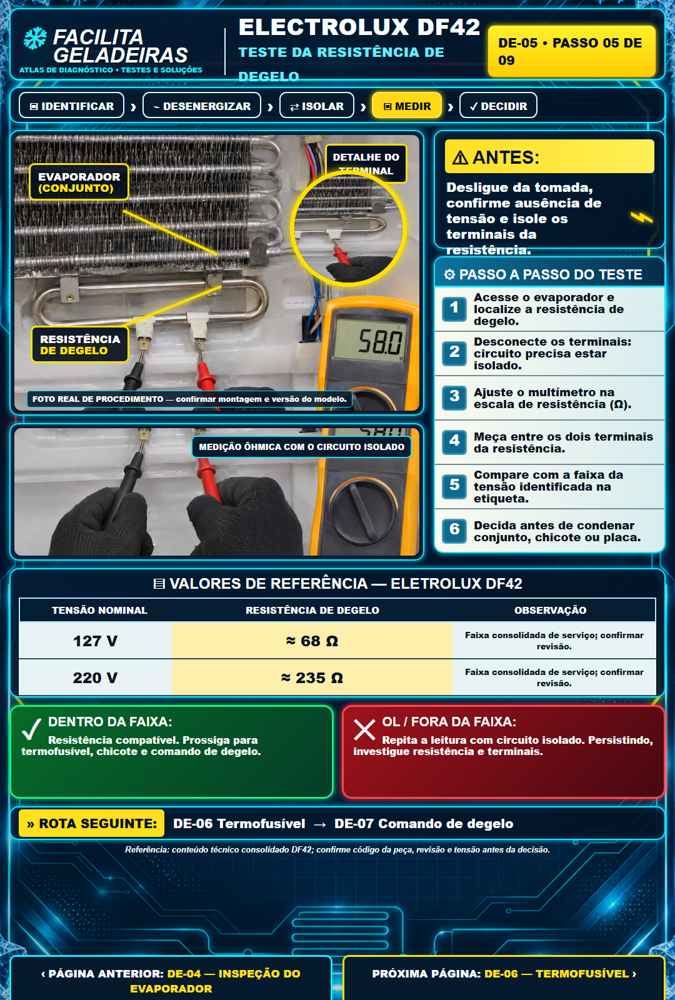
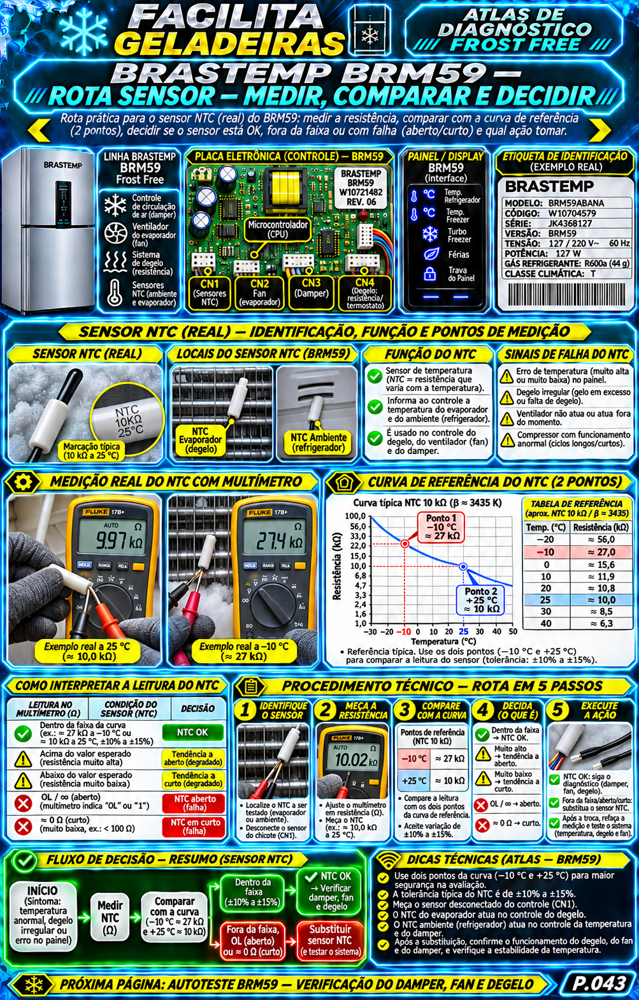
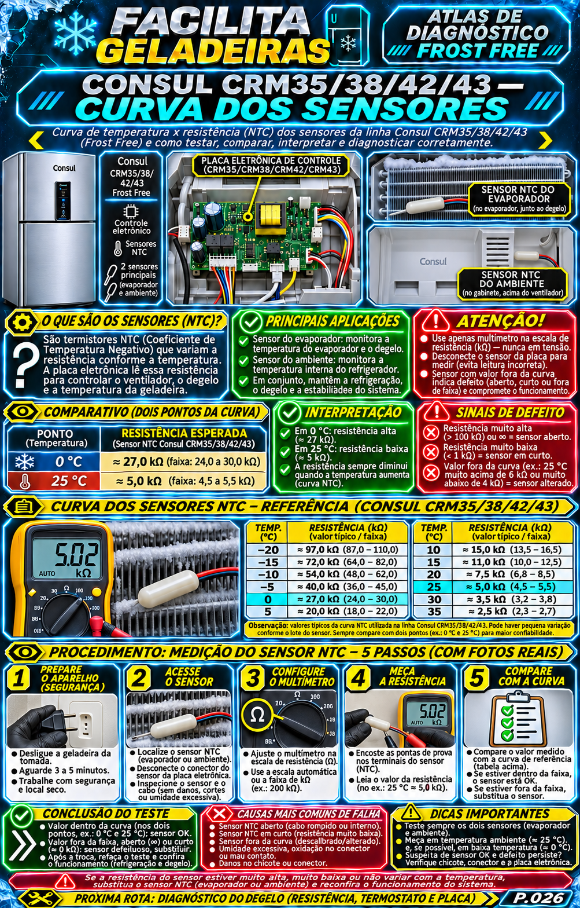
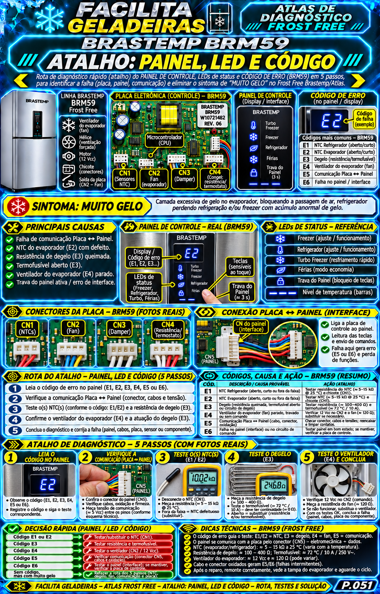
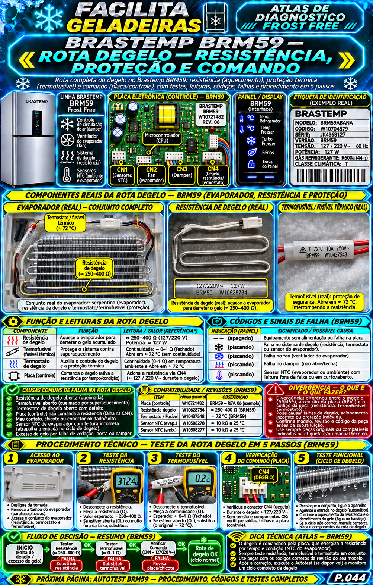
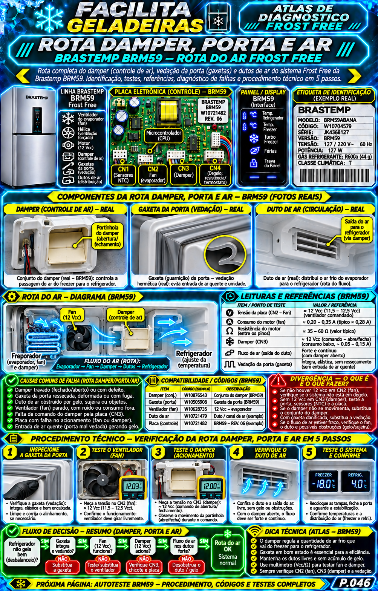
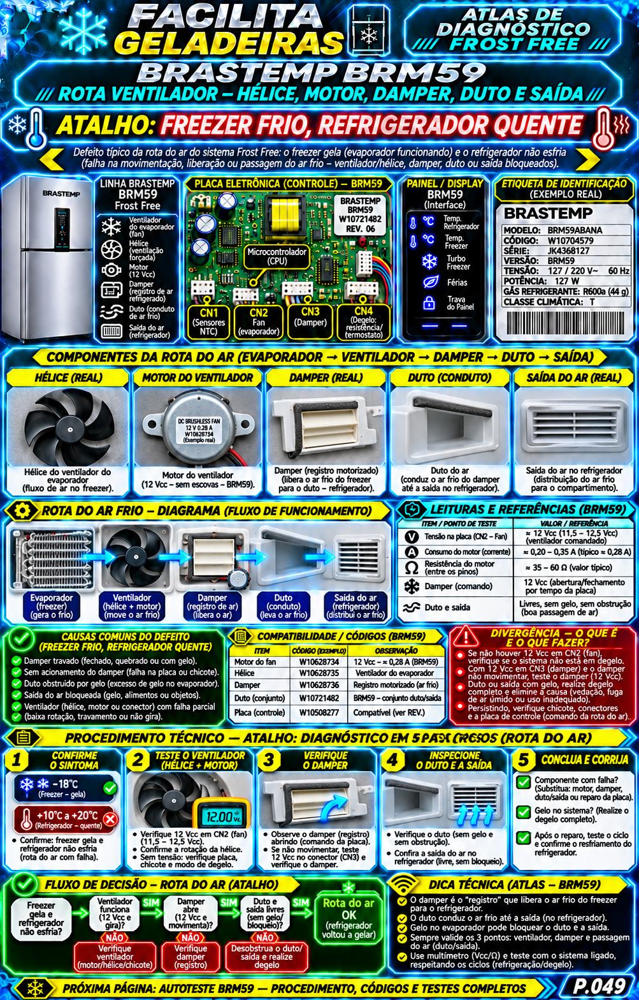
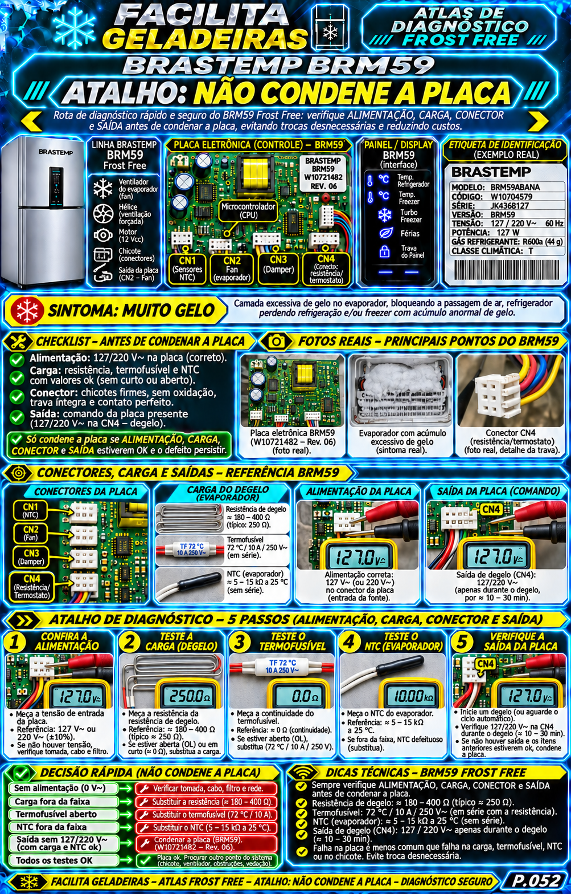
O QUE MUDA NO ATENDIMENTO
UMA ROTA NÃO SERVE PARA CHUTAR. ELA SERVE PARA ELIMINAR ETAPAS.
⚡ CONSULTA PARA BANCADA E CAMPO
PARE DE PERDER ATENDIMENTO CAÇANDO INFORMAÇÃO ESPALHADA.
Abra a rota da família, confirme o teste aplicável e avance com uma sequência organizada.
QUERO AS ROTAS DE CONSULTAFEITO PARA QUEM JÁ TRABALHA NA ÁREA
ESTE MATERIAL É PARA O TÉCNICO QUE QUER
CHEGAR AO TESTE COM LÓGICA
Ter uma rota inicial por modelo/família, em vez de aplicar o mesmo padrão em todas as geladeiras.
INTERPRETAR PAINEL E LED
Registrar o alerta antes de desligar e abrir o ramo de componente que ele realmente aponta.
CONFERIR SENSORES E DEGELO
Encontrar a referência de resistência com condição de leitura e sem transportar valor de outro modelo.
REDUZIR DESMONTAGEM À TOA
Conferir ar, gelo, fan, damper e condição física antes de abrir evaporador, painel ou placa.
TER UM ATALHO PELO SINTOMA
Entrar pelo relato do cliente e voltar à família antes de usar valores, pinagem ou sequências.
EXPLICAR O DIAGNÓSTICO COM MAIS CLAREZA
Organizar fotos, leituras e o próximo passo antes de falar em peça, reparo ou placa.
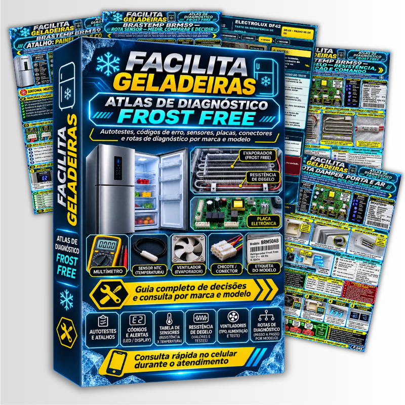
ATLAS PRINCIPAL
TUDO O QUE VOCÊ VAI RECEBER NO FACILITA GELADEIRAS
Uma ferramenta de consulta para Frost Free residencial, organizada pela lógica de atendimento: identificar → testar → interpretar → seguir.
- Índice visual por marca, linha e família/modelo mapeado
- Rotas de autoteste e pré-autoteste por família
- Decodificador de display, LEDs e alertas aplicáveis
- Fichas de sensor: função, localização, curva e condição de leitura
- Rotas de degelo, resistência, termofusível, fan, damper e circulação de ar
- Pré-desmontagem: o que confirmar antes de abrir evaporador, painel ou placa
- Mapas de conectores e pontos de teste quando documentados para a família
Valores, sequência e aplicação devem ser conferidos na rota da família indicada. O Atlas não transforma dado de outro modelo em especificação universal.
E NÃO PARA POR AÍ… TEM MAIS!
VOCÊ TAMBÉM VAI RECEBER 4 BÔNUS DE BANCADA
🎁 PARA COMPLETAR A CONSULTA DURANTE O ATENDIMENTO
BÔNUS 01
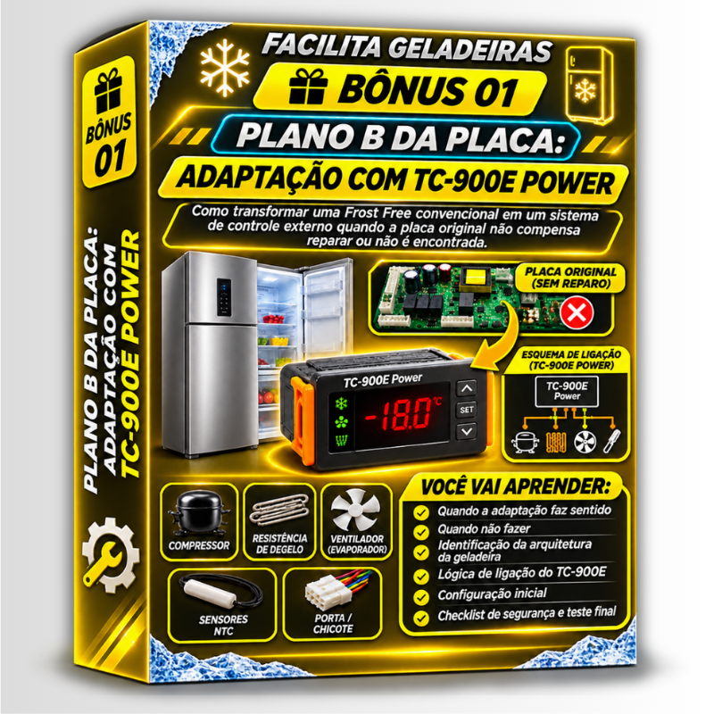
Plano B da Placa: TC-900E Power
Rota para decidir quando uma adaptação de controle externo faz sentido, o que bloqueia e como validar a arquitetura antes de qualquer ligação.
Valor: R$ 27,90 GRÁTIS
BÔNUS 02
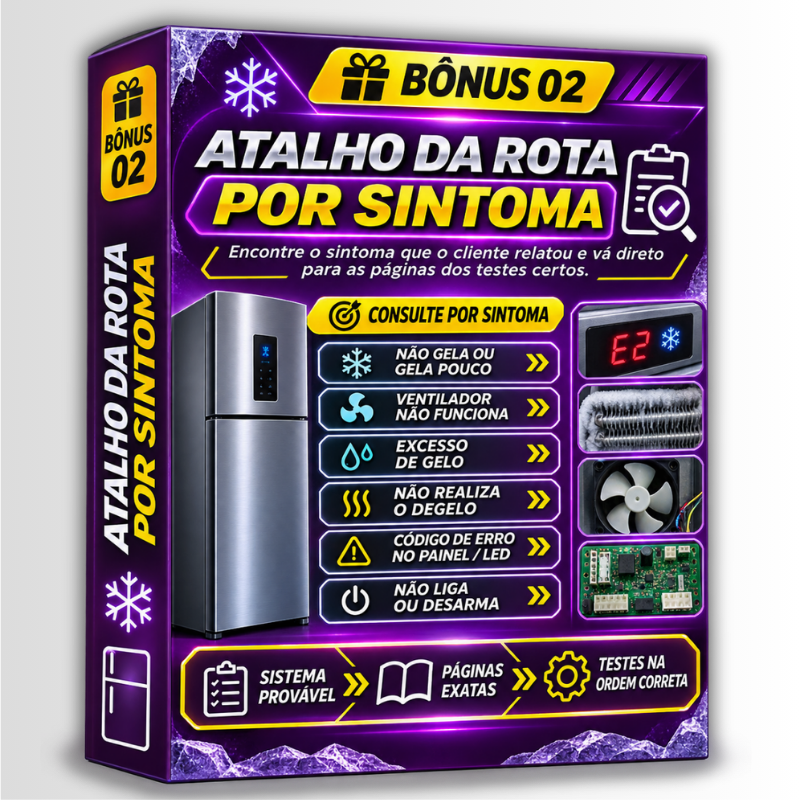
Atalho da Rota por Sintoma
Entre por “não gela”, “muito gelo”, fan parado ou painel/LED e encontre as páginas específicas que devem ser abertas.
Valor: R$ 27,90 GRÁTIS
BÔNUS 03
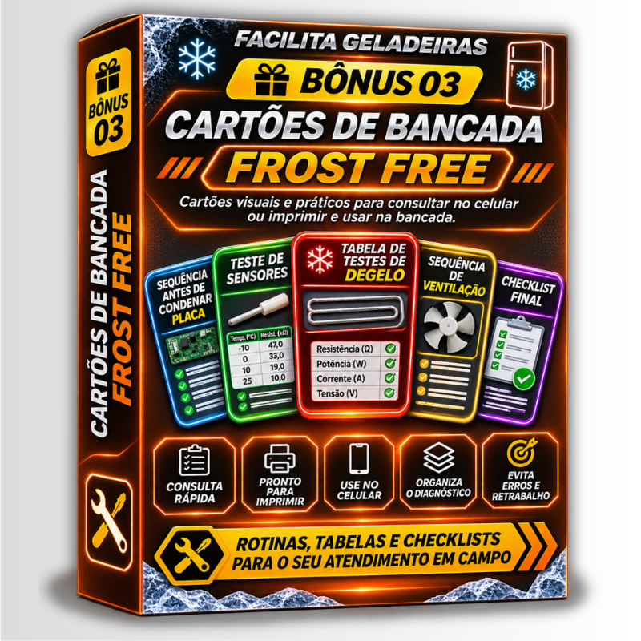
Cartões de Bancada Frost Free
Fichas rápidas para sensor, degelo, ventilação, fechamento da evaporadora e conferência antes de condenar placa.
Valor: R$ 27,90 GRÁTIS
BÔNUS 04
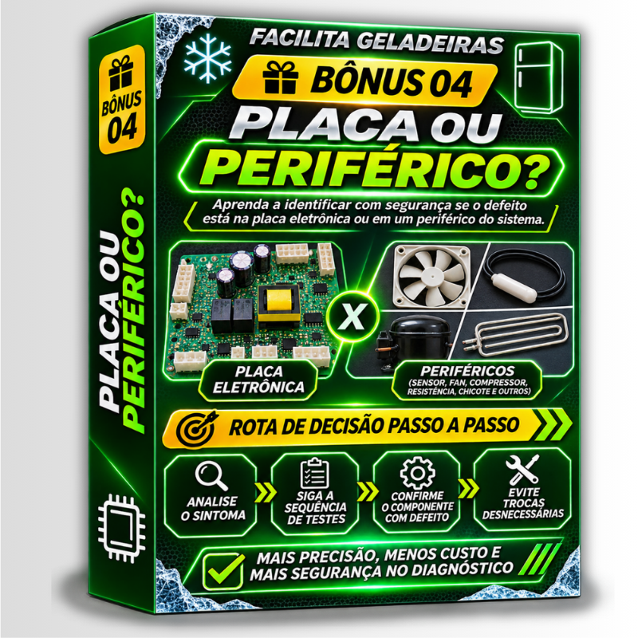
Placa ou Periférico?
Uma rota visual de eliminação para separar rede, condição, carga, chicote e saída antes de tratar a placa como defeito.
Valor: R$ 27,90 GRÁTIS
⚡ OFERTA ESPECIAL DISPONÍVEL HOJE
ESCOLHA A OPÇÃO IDEAL PARA SUA BANCADA
PLANO BÁSICO
A rota essencial para começar.
- Atlas Facilita Geladeiras: guia de decisões e consulta Frost Free
- Índice visual por família/modelo mapeado
- Rotas de autoteste, painel, sensores, degelo e ventilação
- Mapas de pré-desmontagem e próximos testes
VALOR DE LANÇAMENTO
R$ 27,90
ou em até 6x no cartão, conforme o checkout
GARANTIR O PLANO BÁSICO🔥 OFERTA ESPECIAL DISPONÍVEL HOJE
PLANO COMPLETO
⚡ ATLAS PRINCIPAL + 4 BÔNUS DE CAMPO
- Todo o Atlas Facilita Geladeiras
- Bônus 01 — Plano B da Placa: TC-900E Power
- Bônus 02 — Atalho da Rota por Sintoma
- Bônus 03 — Cartões de Bancada Frost Free
- Bônus 04 — Placa ou Periférico?
- Consulta por modelo/família e entrada por sintoma
VALOR DE LANÇAMENTO
R$ 37,90
ou em até 8x no cartão, conforme o checkout
GARANTIR O PLANO COMPLETO🔒 Compra processada em ambiente seguro
7DIASGARANTIA
7 DIAS PARA CONHECER O MATERIAL COM TRANQUILIDADE
Você acessa o conteúdo e confere se o formato de consulta faz sentido para sua rotina. Caso o material não seja adequado para você, poderá solicitar reembolso dentro do prazo informado no checkout.
PERGUNTAS FREQUENTES
O acesso é imediato após a compra?
Após a confirmação do pagamento, o acesso digital é liberado pela plataforma de pagamento.
Serve para qualquer geladeira Frost Free?
O material organiza as famílias e rotas cobertas. Cada página informa aplicação, condição e limites; modelo igual de outra revisão não deve receber uma rota por suposição.
É um curso para quem está começando do zero?
Não. É uma ferramenta de consulta para técnico que já conhece o básico e utiliza instrumentos de medição no atendimento.
Posso usar o material no celular?
Sim. As rotas foram organizadas para consulta digital no atendimento e também podem ser usadas como referência de bancada.
O Atlas ensina a condenar placa?
Ele organiza verificações de carga, chicote, condição e saída para que placa não seja tratada como primeira hipótese.
Posso imprimir?
Sim. O material digital pode ser consultado no celular ou impresso para uso na bancada.